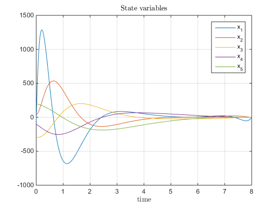

Homework 5 - EE 547 (PMP) - Winter 2015
prepared by Paul Adams
Contents
Initialization
function hw5()
close all digits(3); format shortG set(0, 'defaultTextInterpreter', 'latex'); numerical_precision = 1e-9; syms s xdot x x_1 x_2 x_3 x_4 x_5 u_1 u_2 u_3 u_4 u_5 u t t_0
Problem 1 (Controllability and Observability)
Setup
x = [x_1; x_2; x_3; x_4; x_5];
u = [u_1; u_2; u_3; u_4; u_5];
A = [-9 -31 -51 -40 -12;
1 0 0 0 0;
0 1 0 0 0;
0 0 1 0 0;
0 0 0 1 0];
B = [1; 0; 0; 0; 0];
C = [95 92 -3 60 -72];
D = 0;
render_latex(['\dot{x} = ' latex(sym(A)) '\mathbf{x} + ' latex(sym(B)) 'u'], 12, 1.3)
render_latex(['y = ' latex(sym(B)) '\mathbf{x} + ' latex(sym(D)) 'u'], 12, 1.3)
a) Check if the system is asymptotically stable.
System is asymptotically stable if for all eigenvalues
if all(real(eig(A)) < 0) disp('System is Asymptotically stable') else disp('System is Not Asymptotically stable') end
System is Asymptotically stable
b) Evaluate the controllability and observability matrices of the system, C and O.
cm = ctrb(A, B); om = obsv(A, C); render_latex(['\mathcal{C} = ' latex(sym(cm))], 12, 1.3) render_latex(['\mathcal{O} = ' latex(sym(om))], 12, 1.3)

c) Check if the system is controllable and observable by the ranks of controllability and observability matrices, C and O.
The system is controllable and observable if the rank (linearly independant columns) of the controllability and observability matrices are at least equal to n, respectively.
n = size(A, 1); if rank(cm) >= n disp('System is controllable') else disp('System is not controllable') end if rank(om) >= n disp('System is observable') else disp('System is not observable') end
System is controllable System is observable
d) Find the controllability and observability gramians, Wc and Wo, of this system.
Utilize the Matlab function gram
sys = ss(A, B, C, D); Wc = gram(sys, 'c') Wo = gram(sys, 'o')
Wc =
0.072894 -2.9387e-18 -0.0032176 1.4403e-18 0.0006713
-2.9387e-18 0.0032176 -8.4337e-19 -0.0006713 1.2181e-18
-0.0032176 -8.4337e-19 0.0006713 2.8571e-20 -0.00043981
1.4403e-18 -0.0006713 2.8571e-20 0.00043981 1.1539e-18
0.0006713 1.2181e-18 -0.00043981 1.1539e-18 0.0013657
Wo =
678.82 1596.8 1227.7 683.3 216
1596.8 25447 45270 27386 16930
1227.7 45270 92387 62607 32482
683.3 27386 62607 51653 25532
216 16930 32482 25532 21160
Please derive input that drives initial state x0 into x1 within 8 seconds.
Implement the minimum energy control input, given by
x0 = [-50; 40; -300; -100; 200]; x1 = zeros(5, 1); t1 = 8; syms t u = vpa(-B'*expm(A'*(t1-t))*inv(Wc)*(expm(A*t1)*x0 - x1), 4); render_latex(['u = ' latex(u)], 11, 0.5)
Use lsim function to simulate this controllable system and plot the input and state variable.
tspan = 0:0.01:t1; u = eval(subs(u, t, tspan)); [y, t, x] = lsim(ss(sys), u, tspan, x0); figure, plot(t, x) grid on title('State variables') xlabel('time') legend('x_1', 'x_2', 'x_3', 'x_4', 'x_5') figure grid on plot(t, u) title('Applied Input') xlabel('time')
Problem 2 (Lyapunov Controllability Test)
Setup
x = [x_1; x_2; x_3];
u = [u_1; u_2; u_3];
A = [-9 9 -5;
7 -9 7;
2 2 -6];
B = eye(3);
C = eye(3);
D = zeros(3);
render_latex(['\dot{x} = ' latex(sym(A)) '\mathbf{x} + ' latex(sym(B)) 'u'], 12, 0.8)
render_latex(['y = ' latex(sym(B)) '\mathbf{x} + ' latex(sym(D)) 'u'], 12, 0.8)
Check if the system is asymptotically stable.
System is asymptotically stable if for all eigenvalues
if all(real(eig(A)) < 0) disp('System is Asymptotically stable') else disp('System is Not Asymptotically stable') end
System is Asymptotically stable
Check the controllability of this system by Lyapunov test.
System is controllable if there does not exist a positive definite solution to the Lyapnuov equation, given by
try R = lyapchol(A, B); Wc = R*R'; if all(eig(Wc)) > 0 disp('There does exist a solution to the Lyapunov equation. The system is controllable.') else disp('There does not exist a solution to the Lyapunov equation. The system is not controllable.') end catch err disp('There does not exist a solution to the Lyapunov equation. The system is not controllable.') end
There does exist a solution to the Lyapunov equation. The system is controllable.
Derive the controllability and observability matrices of the system.
The controllability matrix is defined as
The obsevability matrix is defined as
cm = []; for n = 1:size(A,1) cm = [cm, A^(n - 1)*B]; end
om = []; for n = 1:size(A,1) om = [om; C*A^(n - 1)]; end render_latex(['\mathcal{C} = ' latex(sym(cm))], 12, 1) render_latex(['\mathcal{O} = ' latex(sym(om))], 12, 2)

Check if the system is controllable and observable by the ranks of C and O.
The system is controllable and observable if the rank (linearly independant columns) of the controllability and observability matrices are at least equal to n, respectively.
n = size(A, 1); if rank(cm) >= n disp('System is controllable') else disp('System is not controllable') end if rank(om) >= n disp('System is observable') else disp('System is not observable') end
System is controllable System is observable
d) Find the controllability and observability gramians, Wc and Wo, of this system.
Utilize the Matlab function gram
sys = ss(A, B, C, D); Wc = gram(sys, 'c') Wo = gram(sys, 'o')
Wc =
1.0582 1.45 0.80529
1.45 2.119 1.203
0.80529 1.203 0.75275
Wo =
1.5385 1.6978 0.73077
1.6978 1.9396 0.83791
0.73077 0.83791 0.45192
Please derive input that drives initial state x0 into x1 within 8 seconds.
Implement the minimum energy control input, given by
x0 = [10; -20; 30]; x1 = zeros(3, 1); t1 = 8; syms tau % Wc = int(expm(A*(t1-tau))*(B*B')*expm(A'*(t1-tau)), tau, 0, t1); t = 0:0.01:t1; u = zeros(length(t), n); for i = 1:length(t) u(i, :) = -B'*expm(A'*(t1-t(i)))*inv(Wc)*(expm(A*t1)*x0 - x1); end
Use lsim function to simulate this controllable system and plot the input and state variable.
[y, tout, x] = lsim(ss(sys), u, t, x0); % lsim(ss(sys), u, t, x0); figure, plot(tout, x) grid on title('State variables') xlabel('time') legend('x_1', 'x_2', 'x_3') figure grid on plot(tout, u) title('Applied Input') xlabel('time')

close all